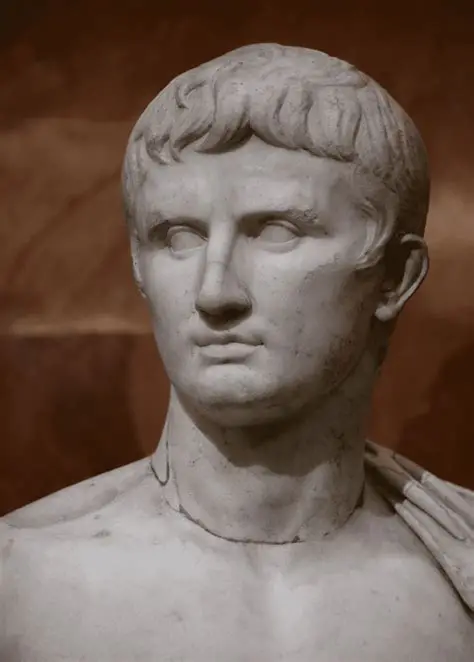

Overview
Octavian, later known as Augustus, was Rome's first emperor and established the principate after the end of the Republican civil wars.
Key facts
- Born: 63 BC
- Died: 14 AD
- Notable for: Reorganizing the Roman state, long reign of relative peace (Pax Romana)